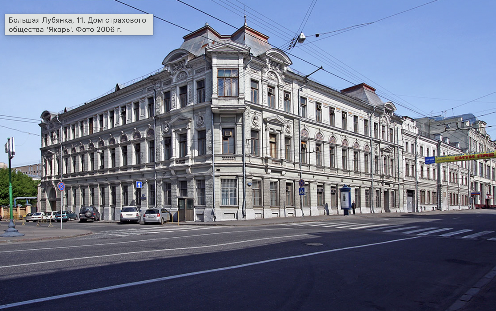
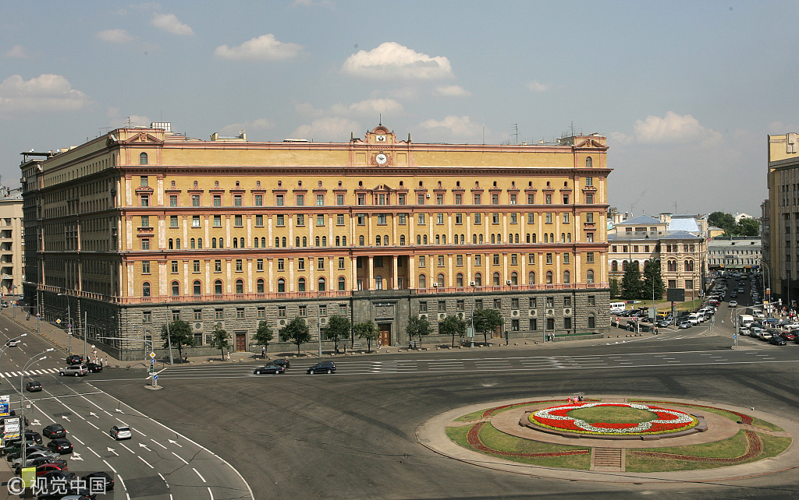
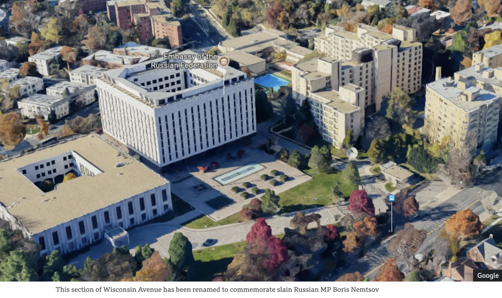
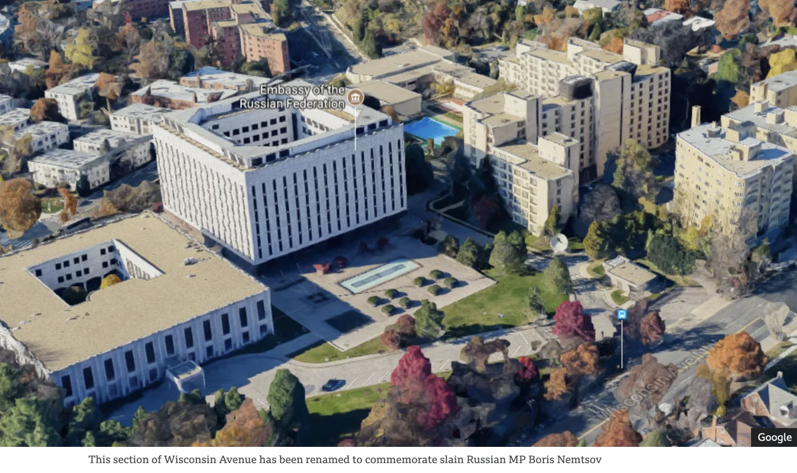

Spy Buildings in Russia and the Soviet Union

Fig.1. Soviet Russia: The KGB originally was called the Russian Extraordinary Commission (in Cyrrilic ВЧК). This was the first building of the secret police in Moscow (1918) and the place where communists executed their victims. The address is Bolshaia Lubyanka 11.

Fig.2. Russia: The FSB Building in Moscow, Russia (former KGB HQ), the agency responsible for both espionage and domestic political terror, directly answerable to the dictator.
 Fig.3. Russia: Solovki Stone. Monument to Victims of Political Terror (by the KGB) next to the FSB Building in Moscow, Russia (former KGB HQ), the stone brought from the Solovki concentration camp in Northern Russia, a camp that established a pattern for the GULag system of slave labor camps

Fig.4. Russia: Russian Embassy in Washington DC and the tunnel underneath it.
Fig.3. Russia: Solovki Stone. Monument to Victims of Political Terror (by the KGB) next to the FSB Building in Moscow, Russia (former KGB HQ), the stone brought from the Solovki concentration camp in Northern Russia, a camp that established a pattern for the GULag system of slave labor camps

Fig.4. Russia: Russian Embassy in Washington DC and the tunnel underneath it.